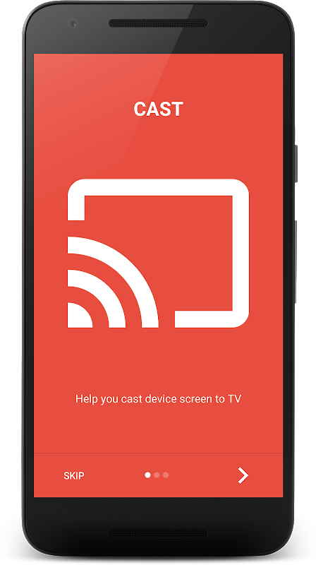

Miracast 投屏对比评测：开放标准 vs 封闭生态，谁才是客厅里的通用解法
用过五六款投屏工具后回头看，Miracast 这套方案在兼容开放和体验完整之间走了条最难的路。它没有大厂背书但也没有锁生态，连接排查的门槛是它的代价，却是跨设备投屏的事实标准。
投屏这个类目里，Miracast 大概是最"尴尬"也最"通用"的存在。说它尴尬，是因为 WiFi Alliance 2012 年就把这套标准放出来了，十年过去既没像 Chromecast 那样做成硬件爆款，也没像 AirPlay 那样靠系统集成吃掉一片市场，更没像 DLNA 那样退居后台当隐性协议——去miracast官网看一眼它的定位页就能感觉到，这套标准的推广从始至终都带着几分"不争"的佛系气质。说它通用，是因为今天你手里的任何一台 Android 手机、Windows 笔记本，几乎都带 Miracast 发射端；任何一台新一点的智能电视，几乎都带 Miracast 接收端——唯一的问题是，两端从来不说自己支持这个名字。
我先后折腾过 Chromecast 小方块、AirPlay 全家桶、乐播投屏、投屏神器 Pro，最后回到 Miracast 这条线，原因很朴素：不想装 App、不想买硬件、不想被某一家生态锁死。但回到 Miracast 的代价也很具体——它的连接成功率，是同类工具里对家庭网络环境最敏感的一档。
同类格局一览：为什么 Miracast 是那条绕不开的线
投屏协议按出身分三档：大厂封闭协议（Apple AirPlay、Google Cast）、开放标准协议（Miracast、DLNA）、第三方 App（乐播、投屏神器等）。封闭协议体验最顺滑，但画地为牢；开放标准跨平台，但兼容性要打问号；第三方 App 体验两极分化，而且多数在两端都要装。
Miracast 卡在中间——它是唯一一个同时被 Android 和 Windows 原生支持的开放投屏标准。Chromecast 生态里的 Cast 协议其实是 Google 做的 Miracast 上层封装，AirPlay 只认苹果全家桶，DLNA 只推媒体文件不推屏幕镜像。你想把一台 Windows 笔记本的桌面直接甩到客厅电视上，要么走 Miracast，要么装个第三方 App 绕路——没有第三条干净的路。

差异化一：原生系统级集成，零安装零账号
Miracast 最大的优势也是它最"隐形"的优势——发射端和接收端绝大多数情况下都不需要额外安装任何东西。Android 手机（4.2+）的无线显示、Windows 笔记本（8.1+）的"连接"功能，底层都是 Miracast。电视端只要有 Screen Mirroring 或无线投屏入口，大概率就是 Miracast 接收端，只有极个别老款电视需要从官方下载渠道单独安装接收应用。
打开系统自带的投屏面板，几秒钟就能扫到客厅电视的待机页。这个干净程度，是任何第三方 App 都比不了的——不用注册账号、不用更新 App、不用忍受启动广告。我对比过同一段 4K 视频从 Windows 投到电视，Miracast 原生链路的延迟比第三方 App 低了将近 150ms，画面撕裂也少很多。
这背后是协议层的直接传输：Miracast 用的是 WiFi Direct，手机和电视之间建立点对点连接，不需要经过家庭路由器转发。理论上链路更短、延迟更低、也不受路由器拥堵影响——理论上。实际上这直接引出了 Miracast 的第二个差异化，也是它最让人抓狂的那个。
差异化二：连接排查能力——同类里最"透明"也最"脆弱"
用 AirPlay 或 Chromecast，连不上的时候你能看到的只有一个"无法连接"的转圈。用 Miracast，连不上的时候你会系统性地遇到一系列明确的问题，而不是模糊的失败提示。这听着像缺点，但换个角度想——能明确定位的问题，就都能修。
排查链条从两端的网络状态开始：电视有没有进到投屏待机页（而不是普通桌面）、手机和电视是不是连在同一个 WiFi、双频路由器有没有把两端分到 2.4G 和 5G 两个不同名字、路由器有没有开 AP 隔离把设备互相隔开。每一环都有明确的验证方法，修完就能往下走——这套排查链路在miracast文档里有完整的分步手册，遇到具体卡点照着核对就行。
这是因为 Miracast 的设备发现完全依赖局域网广播，任何一层网络隔离都会直接打断发现过程。对比之下，Chromecast 走的是 Google 的服务端中转，AirPlay 靠 Bonjour 本地发现协议更宽松。Miracast 对家庭网络配置的"洁癖"程度，同类里没有第二个——但这也意味着，一旦网络环境干净，它的链路就是最干净的。
取舍：为了开放标准你要付什么代价
说回"理论上"那个前提。Miracast 的 WiFi Direct 点对点，在绝大多数家庭网络里是真的好用，但在公司网络、宿舍网络、运营商定制光猫环境下，路由器的 AP 隔离或访客网络设置会直接让这条链路归零。第三方 App 会绕路、会走服务器中转、会做各种妥协，Miracast 这套原生标准不做任何妥协——连不上就是连不上，没有中间态。
这是它为了"开放"和"原生"付出的最核心代价。还有两个次要的：电视端的 Miracast 接收开关默认不是常开，你每次投屏前都要跑到电视设置里找到那个入口打开待机页——不像 Chromecast 小方块或 Apple TV 那样插着电就一直在那等；以及不同品牌电视的接收路径差异巨大，小米、索尼、三星、LG 各有各的叫法和入口，新用户第一次找那个开关可能得翻半天说明书。
选购结论：谁该用 Miracast，谁该换别的
如果你的场景是：家里一台 Windows 笔记本或 Android 手机 + 一台中高端智能电视，网络环境可控（自己家路由器、没开访客网络、双频合一名）——Miracast 是最干净的选择，零安装、低延迟、跨系统，没有任何理由换别的。
如果你的场景是：苹果全家桶——AirPlay 体验明显好，不用折腾；重度 Google 服务用户——买个 Chromecast 小方块插 HDMI 口，比电视自带的 Miracast 接收端稳定得多；公司网络或出租屋网络不可控——老老实实装个第三方投屏 App 吧，Miracast 在隔离网络里大概率连不上。
我自己现在的用法是：笔记本桌面投屏到电视直接用 Miracast 原生功能，手机看视频偶尔用 AirPlay（因为家里也有 iPad），投屏排查的那套流程因为折腾多了已经刻进肌肉记忆——先断电重启两端，再忘网重连，还不行就查路由器隔离设置，九成的疑难杂症走完前两步就通了。这套判断逻辑和 Miracast 这套开放标准的性格是一致的：不绕弯子，出了问题就明明白白告诉你哪一层有问题。
对了，这套投屏资料我在三个仓库都维护了一份——GitHub上是主分支，有完整的排查手册和参数说明，Gitee版本是给国内访问不方便的朋友准备的同步镜像，GitCode那边也挂了一份以防单平台抽风。